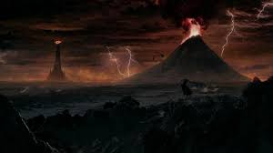

Al llegar a Mordor quedará sorprendido por sus impresionantes vistas, abundante vegetación autóctona y su gran
fauna salvaje, no tardarás en verte inmerso en largas caminatas a lo largo de sus ríos de lava y de sus páramos
de ceniza alrededor de la grieta del destino.
Si lo tuyo son los entornos urbanos puedes visitar los pozos
de orcos donde viven la mayoría de los habitantes de la zona, además está cerca de la impresionante torre que
domina las vistas de la zona con su increíble altura y su ojo llameante.

Si vienes tendrás que quedarte
varios días para poder visitar los mejores sitios, para ello puedes alojarte en distintos sitios, una opción más
rústica es ir a un agujero goblin donde podrás dormir en sobre un agradable lodo confeccionado de manera
tradicional; otra buena opción es alojarte en las casetas de los antiguos terratenientes de los primeros años de
la tercera edad; si tienes más dinero puedes intentar coger una habitación en la torre con todas las
comodidades, pero suele estar reservado con visitantes que intentan acabar con el señor oscuro, pero no suelen
quedarse mucho antes de ser destruido, así que con un poco de suerte puedes conseguir una habitación.
Una vez tienes alojamiento tendrás que comer, la mejor opción y más económica es devorar los cadáveres o seres
moribundos de la zona, siendo además una opción ecosostenible apto para los más concienciados; si quieres una
opción más emocionante está la opción de luchar a muerte con los lugareños por la sangre del contrincante, pero
cuidado puedes encontrarte con un luchador formidable; si no te agradan los métodos tradicionales puedes ir a
restaurantes de la zona y comer comida más elaborada pero que consiguen mantener la esencia del lugar.
Enlaces: